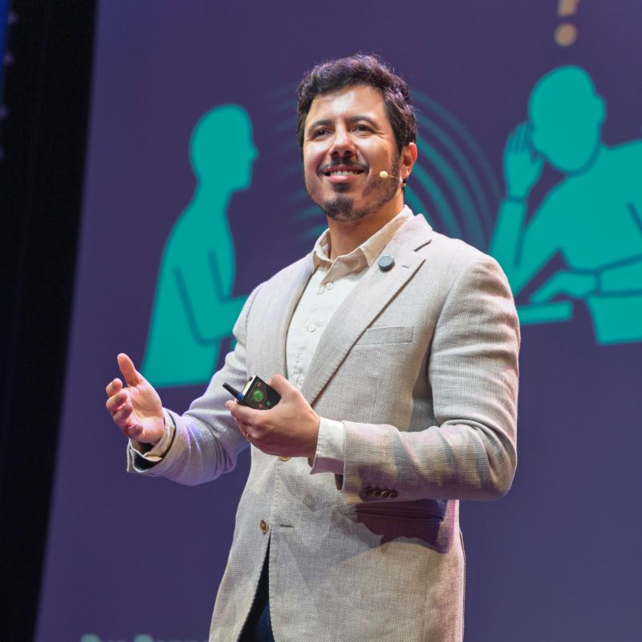
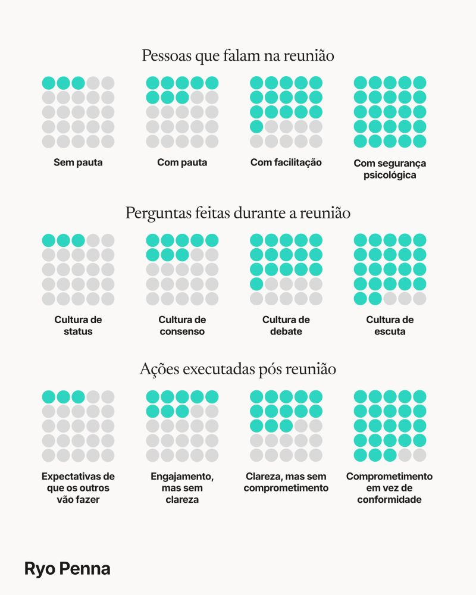
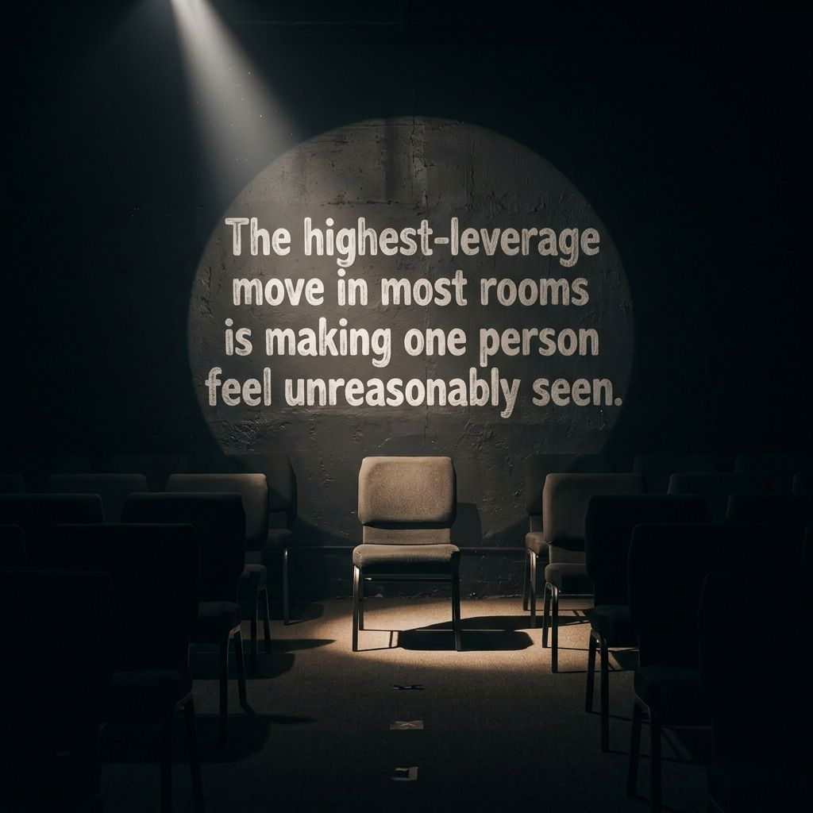
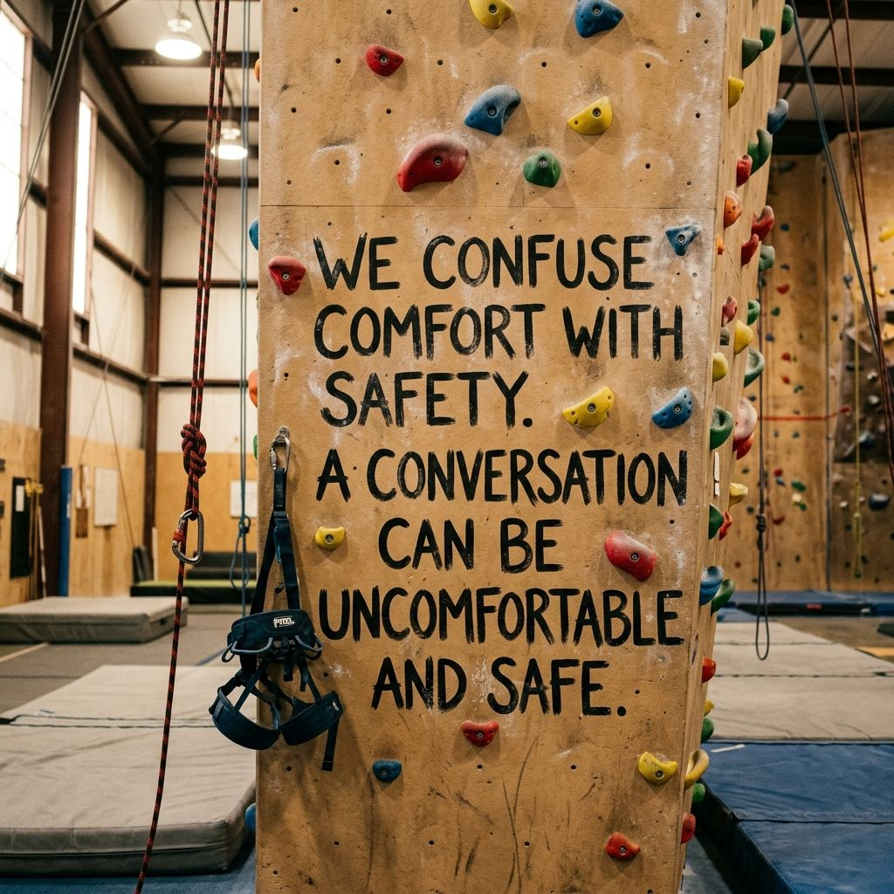

Pesquisador e facilitador de conversas organizacionais
Sobre o Ryo
Pesquisador e facilitador de conversas organizacionais. Trabalho com executivos e times de liderança no mundo inteiro, nas conversas mais críticas e necessárias.
Pesquisador e facilitador de conversas organizacionais. Trabalho com executivos e times de liderança no mundo inteiro, nas conversas mais críticas e necessárias.

15611
1.22776
